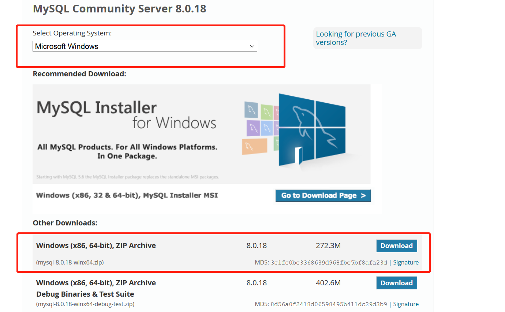
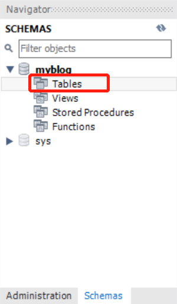

MySQL简单学习增删改查命令
MySql是现在最常用的存储工具，所以学会MySql对于我们来说就非常必要了。但是这里只是我记录的一些MySql的简单应用。
MySql的下载安装
- 下载MySQL数据库可以访问官方网站：https://www.mysql.com/downloads/

- 选择合适的下载就可以啦


- 我们还要下载一个workbench操作mysql客户端，可视化操作

或者 https://dev.mysql.com/downloads/workbench/
- 然后就是傻瓜式安装了，这里面会让你填写密码，一定要记住这个密码哦！！
操作数据库
点击这个小圆圈，就会出现一个框
进去就是这个样子的，我们执行show databases查看一下，注意这里的闪电标识，如果没有选中语句，点击这个闪电，代表执行所有的命令，如果想只执行一个命令，就选中那个命令，然后点击闪电
建库
点击下图的图标，在Name框里输入你的库的名字，然后点击Apply就可以了，他还会再弹出一个框，继续点击Apply，我们的库就建好啦！
如果你想要确认有没有建库成功，可以再执行以下show databases就可以啦

建表
在左侧就能找到我们刚才建的库了，然后我们只需要在Tables里建表就可以啦

- Column name – 列名
- Datatype – 数据类型
- PK – 主键，保证不能重复
- NN – 不能为空
- AI – 自动增加
- default – 默认值

常用命令
use <库名> – 开始使用这个数据库
show tables – 显示数据库中所有的表
--show tables – 加上两个横杠，这行代码就被注释了
增删改查
增（插入数据）
insert into users(realname) values('zhangsan'); //users是表名查
查询所有信息（列）
select * from users; // * 表示将表中所有的列查询部分信息（列）
select id,username from users; // id,username就被查询出来了查询匹配信息（列）
select * from users where username = 'zhangsan' and password = '123'; // where 后面跟条件模糊查询
select * from users where username like '% zhang %'; //注意要用% %将条件包裹排序方式
select * from users where username like '%zhang%' order by id; //这里是按照id顺序排列- 改
MySql运行在safe-updates模式下，该模式会导致非主键条件下无法执行update或者delete命令，执行命令SET SQL_SAFE_UPDATES = 0;修改下数据库模式
SET SQL_SAFE_UPDATES = 0 ;然后带条件修改
update users set realname='李四2' where username='lisi';删
delete from users where id='4'; //删除users表中id=4的数据但是应用的时候一般用的是软删除，在表中加一列名为status的列，默认值为1，想删除的行只需要用
updata将status的值改为0就好了，相当于做一个标记，select时加上条件status = 1就可以了
转载请注明来源，欢迎对文章中的引用来源进行考证，欢迎指出任何有错误或不够清晰的表达，可以邮件至 610193653@qq.com，谢谢啦！
文章标题:MySQL简单学习增删改查命令
本文作者:zzzwyyy
发布时间:2019-10-09, 16:28:27
最后更新:2019-11-16, 16:29:27
原始链接:http://yoursite.com/2019/10/09/MySQL简单学习增删改查命令/版权声明: "署名-非商用-相同方式共享 4.0" 转载请保留原文链接及作者。